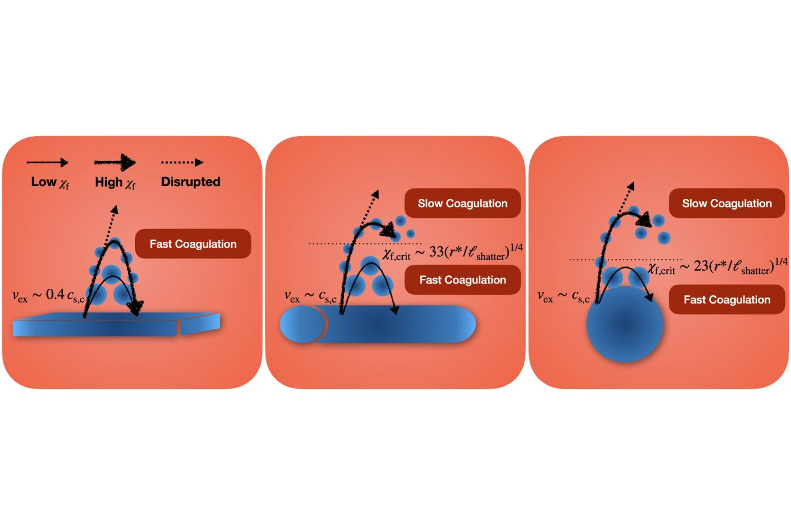

10.1093/mnras/stae2771 · arXiv:2410.12914This page collects the simulation movies referenced in the paper above. The movies illustrate the thermal fragmentation (“shattering”) and coagulation of pressure-perturbed cold clouds in three idealised geometries — sheets, streams, and spheres. The page is intended as a visual supplement; for the physical analysis, parameter scans, and analytic modelling, please see the paper itself.
Each clip is a snapshot sequence from a 3D Eulerian AMR simulation (RAMSES) of an initially cold, dense cloud embedded in a hot, dilute background and held in pressure equilibrium. A small density perturbation seeds an implosion driven by radiative cooling; the cloud rebounds (the “explosion” phase) and either fragments into many cloudlets (“shattering”) or recoagulates back into one or a few larger clouds. The geometry (sheet / stream / sphere), the final overdensity χf, the metallicity, and the presence of a UV background all change the outcome — these movies show those effects.

| Geometry | Sheet, Stream, or Sphere. Determines whether converging flows are 1D, 2D, or 3D. |
|---|---|
| η = ρs,f/ρs,i | Cloud overdensity gain from initial to final equilibrium (set to 10 in all clips here). |
| χf = ρs,f/ρbg | Final cold-cloud overdensity relative to the hot background. This is the dominant parameter for whether the cloud shatters or coagulates. |
| StreamProj / SheetSlice | Visualisation type. StreamProj = density projection along the stream axis. SheetSlice = mid-plane slice through a planar sheet. |
The four clips below isolate the role of the final overdensity χf for cylindrical (stream) geometry at fixed η = 10. Increasing χf moves the final state from quiet recoagulation toward fully developed shattering, with a borderline regime in between. These movies correspond to the stream rows of Table 1 in the paper (η = 10, χf ∈ {100, 200, 400, 1000}).
For comparison with the stream sweep above, the sheet geometry case below shows the implosion/explosion sequence in 1D-converging (planar) geometry. Sheets generically sit in the “fast coagulation” regime in this paper, so even at χf values that shatter streams, the cold sheet recoagulates rapidly.
The full simulation suite explored in the paper covers all three geometries, six values of χf, multiple metallicities (0.03 – 1.0 Z⊙), with and without a UV background, and a range of resolutions (see Table 1 of the paper). Only a subset of those runs are uploaded as movies here; further visualisations may be added to the playlist over time.
Sheets and streams are run with outflow boundary conditions; the analysis (clump finder, mass / size statistics, coagulation criterion, application to cold streams penetrating virial shocks) is reported in the paper.